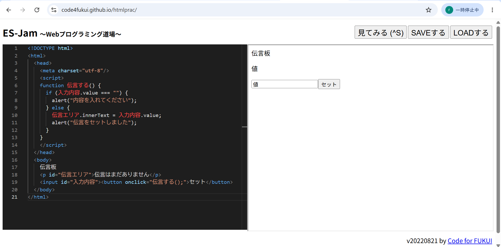

3-2 JavaScript体験：伝言プログラムを作る

伝言板
1.内容
学習した内容を説明する文章を
自分で考えて作成する（50文字以上．100文字程度を推奨．※生成AIを使ってはいけない）
2.感想
学習した内容を実践したときに自分が感じた感想を
自分で考えた文章で作成する（50文字以上．100文字程度を推奨．※生成AIを使ってはいけない）
１．内容
記入欄に文字を書くと伝言板にそれが表示されるプログラムを作った。
headというタグの中には、情報処理系のコードを書くのに使って、bodyというタグの中には、サイトの外観を書くコードを書いていた。
情報処理では、scriptタグを書いてから、functionを定義して、その内容は｛｝の中に書いた。ユーザーに表示する日本語を書くときは、””を使った。
inputを使うと記入欄が現れた。alertを使うと、ボタンを押したときにメッセージが表示された。
buttonを使うと、ボタンが現れた。ボタンの始めと終わりのタグの間に日本語を書くと、ボタンの中に日本語を入力できた。
.は、プログラムの世界では、「の」という意味だった。
条件分岐のときは、if(){}という形でかいて、もし()なら{}するという意味だった。ifで定義した条件以外の動作については、else{}で書けた。
tabキーで、字下げして、コードを見やすくした。
p /pというタグでは、パラグラフを作ることができた。
２．感想
いくつかコードを書いていると、どのタグの中にどのタグがあるのかわからなくなるから、enterキーや、tabキーを駆使して、見やすくすると、コードを書きやすそう。
タグの始まりをかいたあと、すぐにタグの終わりを書くのは大事だと思った。そうしないと、そのせいでサイトがうまく動かなかったときに、原因を見つけるのが面倒くささくなりそうだから。
それでも、すべてのタグに、終わりがいるというわけではないから、書き忘れそうだと感じた。